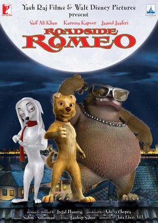

Roadside Romeo(2006)
Rating :
Category : Animated musical romantic-comedy(G)
Production : produced by Aditya Chopra and Yash Chopra of Yash Raj Films and distributed by Walt Disney Studios Motion Pictures
This is the story of Romeo. A dude who was living the life. He had the works - the mansion to live in, the chicks to party with and the cars to be driven around in. Until one day, the family he was the favorite pet of, decided to move and left him back, abandoned on the mean streets of Mumbai. Romeo is now faced with situations he has never been in before. He encounters four strays, who scare the daylights out of him. But soon, he smooth talks his way into their hearts and he makes friends. Then, Romeo finds love! He encounters the beautiful, ravishing Laila, the most beautiful girl he has ever seen - and he loses his heart to her at first sight. Finally, he encounters a villain! The dreaded Don of the area - Charlie Anna. The Don who everyone is scared of. So hop on to the adventure as Romeo, wins friendship, love and a new life - inspite of Charlie Anna and his gang! Watch how Romeo turns into - Roadside Romeo!
Up(2009)

Rating :
Category : Animated comedy-drama adventure(G)
Production : produced by Pixar Animation Studios and released by Walt Disney Pictures
As a boy, Carl Fredricksen wanted to explore South America and find the forbidden Paradise Falls. About 64 years later he gets to begin his journey along with Boy Scout Russell by lifting his house with thousands of balloons. On their journey, they make many new friends including a talking dog, and figure out that someone has evil plans. Carl soon realizes that this evildoer is his childhood idol.
Tangled(2010)

Rating :
Category : Musical adventure fantasy comedy(G)
Production : produced by Walt Disney Animation Studios and released by Walt Disney Pictures.
After receiving the healing powers from a magical flower, the baby Princess Rapunzel is kidnapped from the palace in the middle of the night by Mother Gothel. Mother Gothel knows that the flower's magical powers are now growing within the golden hair of Rapunzel, and to stay young, she must lock Rapunzel in her hidden tower. Rapunzel is now a teenager and her hair has grown to a length of 70-feet. The beautiful Rapunzel has been in the tower her entire life, and she is curious of the outside world. One day, the bandit Flynn Ryder scales the tower and is taken captive by Rapunzel. Rapunzel strikes a deal with the charming thief to act as her guide to travel to the place where the floating lights come from that she has seen every year on her birthday. Rapunzel is about to have the most exciting and magnificent journey of her life.